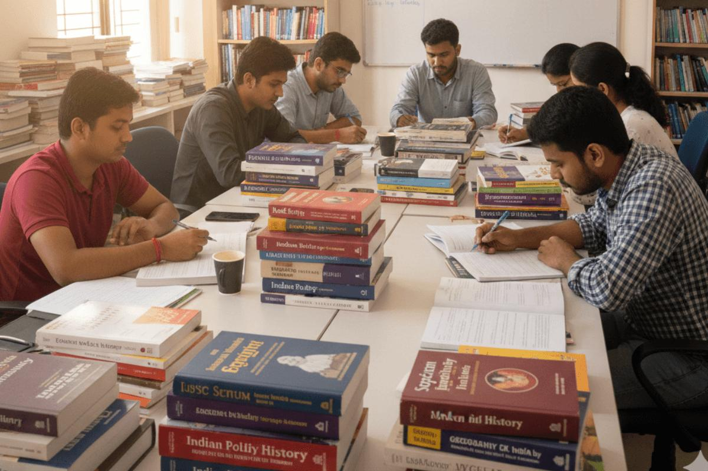
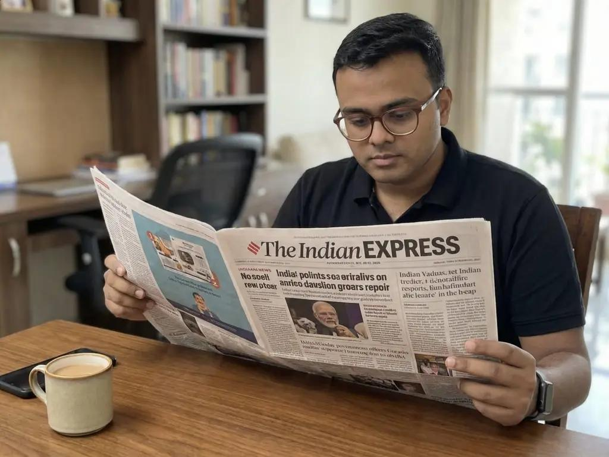

Explore Each Program in Detail
Select any learning track below to inspect its structure, duration, and deliverables.

UPSC Civil Services Foundation
Complete NCERT-to-Advanced coverage of GS Papers I–IV, CSAT, Essay workshops, and weekly answer writing evaluation for first-time aspirants.

UPSC Prelims Preparation
Rapid high-yield consolidation for GS Paper I and CSAT Paper II with 40+ simulated full-length & sectional tests.
UPSC Mains Answer Craft
Daily 2-question timed writing, GS-IV Ethics case studies, Essay structuring, and 12 full-length evaluated Mains simulations.

Interview Guidance Board
Customized DAF-I & DAF-II question banks, 1-on-1 current affairs briefings, and 4 mock board panels with retired civil servants.

Integrated GS + Optional Program
Unified Prelims, Mains, Optional Subject (PSIR, Sociology, Geography, Anthropology), and Test Series with continuous mentor tracking.

Current Affairs & All-India Test Series
Daily newspaper editorial synthesis, monthly PIB & Yojana compendiums, and All-India ranked Prelims/Mains test series.